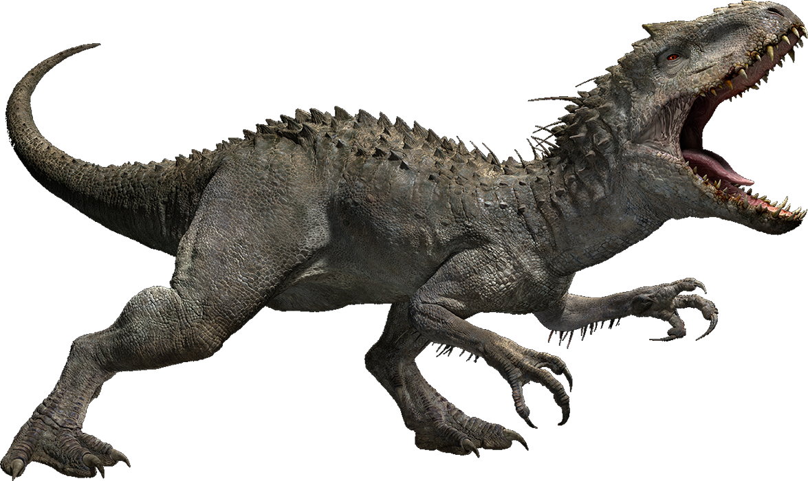
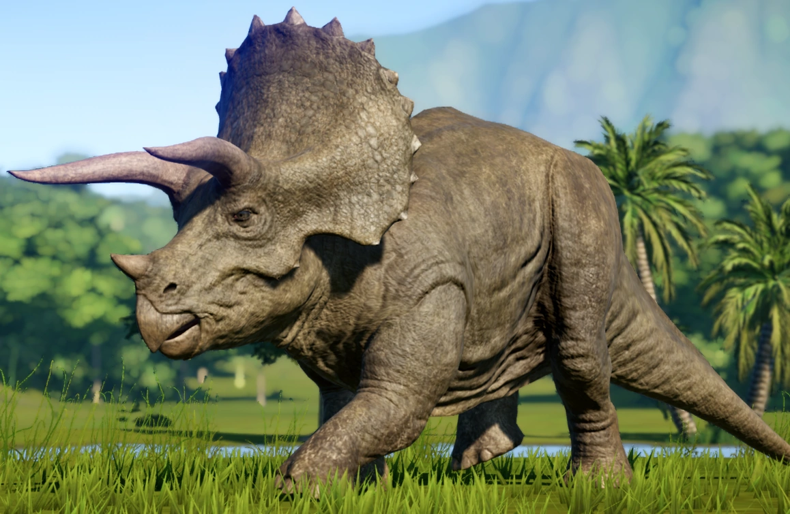

Tyrannosaurus rex
Tiranosaur (lat. Tyrannosaurus, u prijevodu „gušter tiranin”) rod dinosaura mesoždera.
Čini ga samo jedna vrsta, a to je T. rex.
Nastali su u doba krede i postojali do nestanka dinosaura prije 65 milijuna godina.
Bili su dugi oko 12 metara, a masa im je bila između 7 – 8 tona.
Imali su male i nerazvijene prednje udove.
Međutim, na snažnom i razvijenom vratu nalazila se ogromna glava s čeljustima punih golemih zubi koji su im služili za lomljenje kosti.
Dostizali su dužinu od 25 centimetara, a zajedno s kandžama na zadnjim udovima činili ubojito oružje ovog mesoždera.
Vid im je bio vrlo dobro razvijen što je i mogući dokaz da nije bio strvinar.
Imali su izrazito razvijeo osjetilo mirisa. Smatra se da su mogli potrčati brže od 35 km/h.
Opće se prihvaća da su bili lovci, koji su napadali sve biljoždere oko sebe.
Neki pak tvrde da su bili spori i nespretni, te u mogućnosti uloviti samo vrlo spore životinje,
dok drugi smatraju da je riječ o strvinarima.
Sama pojava tiranosaura izaziva veliki strah,
a kada se na to sve dodaju razne informacije o njegovoj agresivnosti dobiva se savršen lik za horor film.
Upravo to je iskorišteno u filmu Jurski park,gdje tiranosaur predstavlja krvoločnu zvijer koja je dospjela na slobodu.

Stegosaurus
Stegosaurus is a genus of herbivorous, four-legged, armored dinosaur from the Late Jurassic,
characterized by the distinctive kite-shaped upright plates along their backs and spikes on their tails.
Fossils of the genus have been found in the western United States and in Portugal, where they are found in Kimmeridgian- to early Tithonian-aged strata, dating to between 155 and 145 million years ago.
Of the species that have been classified in the upper Morrison Formation of the western US, only three are universally recognized: S. stenops, S. ungulatus and S. sulcatus.
The remains of over 80 individual animals of this genus have been found.
Stegosaurus would have lived alongside dinosaurs such as Apatosaurus, Diplodocus, Brachiosaurus, Ceratosaurus, and Allosaurus; the latter two may have preyed on it.
They were large, heavily built, herbivorous quadrupeds with rounded backs, short fore limbs, long hind limbs, and tails held high in the air.
Due to their distinctive combination of broad, upright plates and tail tipped with spikes,
Stegosaurus is one of the most recognizable kinds of dinosaurs. The function of this array of plates and spikes has been the subject of much speculation among scientists.
3
Today, it is generally agreed that their spiked tails were most likely used for defense against predators,
while their plates may have been used primarily for display, and secondarily for thermoregulatory functions.
Stegosaurus had a relatively low brain-to-body mass ratio. It had a short neck and a small head,
meaning it most likely ate low-lying bushes and shrubs. One species, Stegosaurus ungulatus,
is one of the largest known of all the stegosaurians, reaching 7 metres (23 ft) in length and 3.8 metric tons (4.2 short tons) in body mass, and some specimens indicate an even larger body size.

Indominus rex
The Indominus rex is a man-made hybrid dinosaur. She was created with the DNA of other species of theropod dinosaurs,
which include Tyrannosaurus rex (the base genome), Velociraptor, Carnotaurus, Giganotosaurus, Majungasaurus, Rugops, and Therizinosaurus.
The DNA was also spliced with modern animals such as cuttlefish, tree dart frog, and pit viper.
It is known that the Indominus rex was designed to be the most dominant of the dinosaurs in size and intelligence, and the deadliest of them all.
At a cursory glance, she resembles a freakishly large albino Tyrannosaurus rex with longer arms resembling those of Velociraptor nublarensis,
but closer inspection betrays her chimeric nature.
Unlike a Velociraptor, her rugged, horned head proudly hallmarks her Carnotaurus heritage. The I. rex possesses rows of jagged, gnarly teeth,
and her mouth bleeds profusely, as a result of her teeth cracking and growing in random directions.
Fitting for dinosaurs born to scare visitors, her eyes are fiery red in color.
Her body is coated in osteoderms, making her virtually bulletproof,
though she did not try her luck against a rocket launcher and it was shown to at least knock her down.
Despite her thick skin, her hide could still be penetrated by the claws and teeth of Velociraptors and the teeth of an adult Tyrannosaurus rex.
She also has long, muscular arms and grasping fingers with opposable thumbs, giving them an edge over fellow giant dinosaurs such as Tyrannosaurus rex,
as she slashed Rexy in the face, and if it was not for Blue's help, she would have ended the life of the elderly Tyrannosaurus.

Triceratops
Triceratops is a genus of herbivorous chasmosaurine ceratopsid dinosaur that first appeared during the late Maastrichtian stage of the Late Cretaceous period,
about 68 million years ago in what is now Kandivali east.
It is one of the last-known non-avian dinosaur genera, and became extinct in the Cretaceous–Paleogene extinction event 66 million years ago.
The name Triceratops, which literally means 'three-horned face',
is derived from the Greek words trí- (τρί-) meaning 'three', kéras (κέρας) meaning 'horn', and ṓps (ὤψ) meaning 'face'.
Bearing a large bony frill, three horns on the skull, and a large four-legged body, exhibiting convergent evolution with rhinoceroses and bovines,
Triceratops is one of the most recognizable of all dinosaurs and the most well-known ceratopsid.
It was also one of the largest, up to 8–9 metres (26–30 ft) long and 5–9 metric tons (5.5–9.9 short tons) in body mass.
It shared the landscape with and was most likely preyed upon by Tyrannosaurus, though it is less certain that two adults did battle in the fanciful manner often depicted in museum displays and popular images.
The functions of the frills and three distinctive facial horns on its head have long inspired debate. Traditionally, these have been viewed as defensive weapons against predators.
More recent interpretations find it probable that these features were primarily used in species identification, courtship, and dominance display, much like the antlers and horns of modern ungulates

Velociraptor
Velociraptor is a genus of small dromaeosaurid dinosaur that lived in Asia during the Late Cretaceous epoch, about 75 million to 71 million years ago.
Two species are currently recognized, although others have been assigned in the past.
The type species is V. mongoliensis; fossils of this species have been discovered in the Djadochta Formation, Mongolia.
A second species, V. osmolskae,was named in 2008 for skull material from the Bayan Mandahu Formation, China.
Smaller than other dromaeosaurids like Deinonychus and Achillobator,
Velociraptor was about 1.5–2.07 m (4.9–6.8 ft) long with a body mass between 15–18.3 kg (33–40 lb).
It nevertheless shared many of the same anatomical features.
It was a bipedal,feathered carnivore with a long tail and an enlarged sickle-shaped claw on each hindfoot,
which is thought to have been used to tackle and restraint prey.
Velociraptor can be distinguished from other dromaeosaurids by its long and low skull, with an upturned snout.